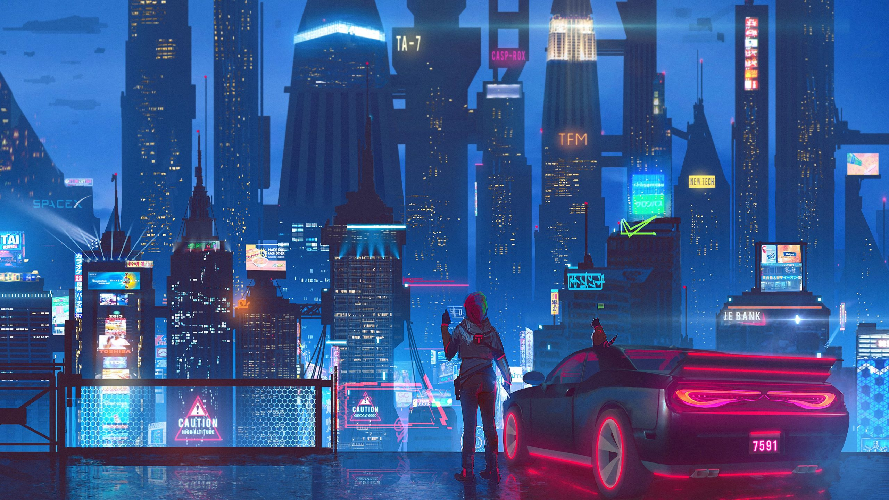
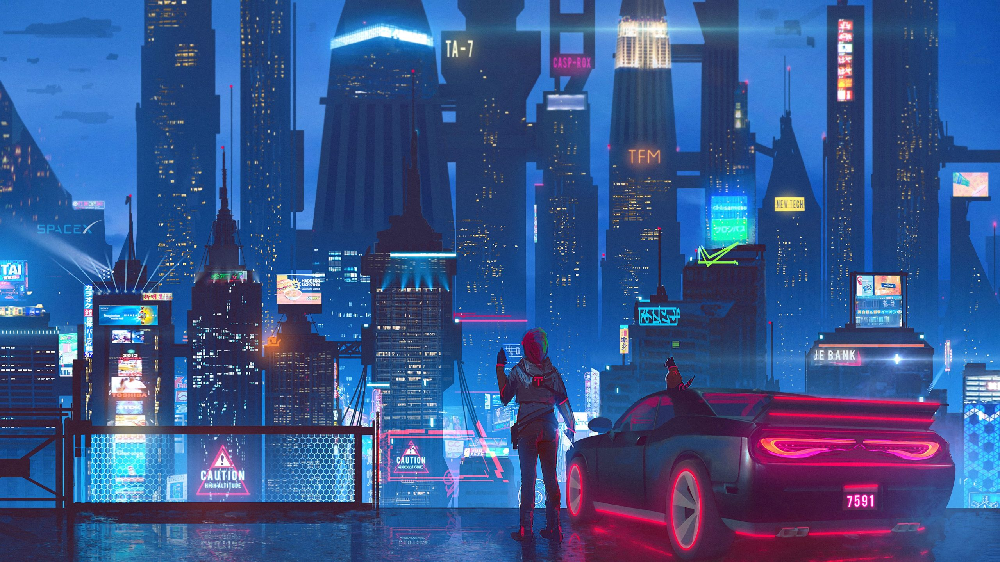

Cyberpunk 2077
"Your body can be chrome... but the heart never changes. "
Despre joc
Cyberpunk 2077 este un joc video de acțiune de rol dezvoltat de CD Projekt Red și publicat de CD Projekt. Povestea are loc în Night City, o lume deschisă plasată în universul Cyberpunk. Jucătorii își asumă perspectiva la persoana întâi a unui mercenar personalizabil cunoscut sub numele de V, care poate dobândi abilități în hacking și mașini cu opțiuni pentru luptă corp la corp și la distanță. Povestea urmărește lupta lui V în timp ce acesta se confruntă cu un implant cibernetic misterios care amenință să-și suprascrie corpul cu personalitatea și amintirile unei celebrități decedate, percepute doar de V; cei doi trebuie să lucreze împreună dacă există vreo speranță de a-i separa pe cei doi și de a salva viața lui V.
Jocul a fost dezvoltat folosind REDengine 4 de o echipă de aproximativ 500 de oameni, depășind numărul care a lucrat la jocul anterior al studioului The Witcher 3: Wild Hunt (2015). CD Projekt a lansat o nouă divizie în Wrocław, Polonia și a colaborat cu Digital Scapes, Nvidia, QLOC și Jali Research pentru a ajuta producția. Creatorul Cyberpunk Mike Pondsmith a fost consultant, iar actorul Keanu Reeves are un rol principal. Partitura originală a fost condusă de Marcin Przybyłowicz, prezentând contribuțiile mai multor artiști licențiați.
După ani de așteptări, CD Projekt a lansat Cyberpunk 2077 pentru PlayStation 4, Stadia, Windows și Xbox One pe 10 decembrie 2020, urmat de PlayStation 5 și Xbox Series X/S pe 15 februarie 2022. A primit laude de la critici pentru narațiunea sa, decorul și grafica, deși unele dintre elementele sale de joc au primit răspunsuri mixte, în timp ce temele și reprezentarea personajelor transgender au primit unele critici. De asemenea, a fost criticat pe scară largă pentru erori, în special în versiunile de consolă, care au suferit de probleme de performanță; Sony l-a eliminat din PlayStation Store din decembrie 2020 până în iunie 2021, în timp ce CD Projekt a remediat unele dintre probleme. CD Projekt a fost supus investigațiilor și proceselor de acțiune colectivă pentru încercările lor percepute de a minimiza gravitatea problemelor tehnice înainte de lansare; acestea au fost în cele din urmă compensate cu o decontare de 1,85 milioane USD. Până în aprilie 2022, jocul se vânduse în peste 18 milioane de copii. O expansiune, Phantom Liberty, urmează să fie lansată în 2023 pe PC și a noua generație de console de jocuri video. O continuare este în dezvoltare.
Cadre din joc:
 
